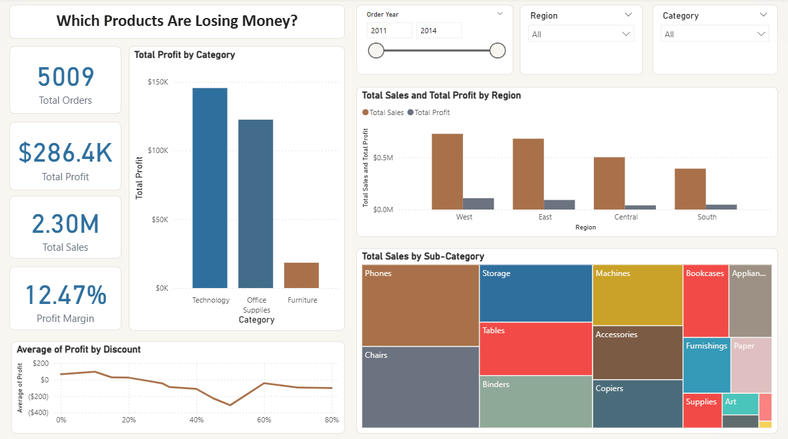
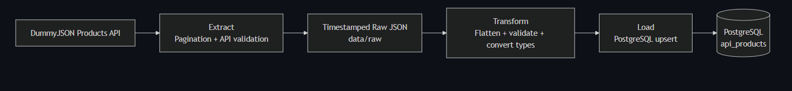
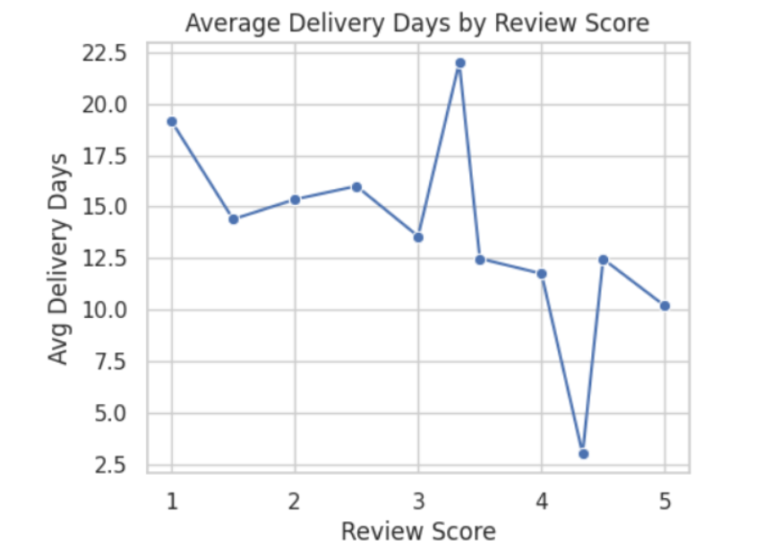
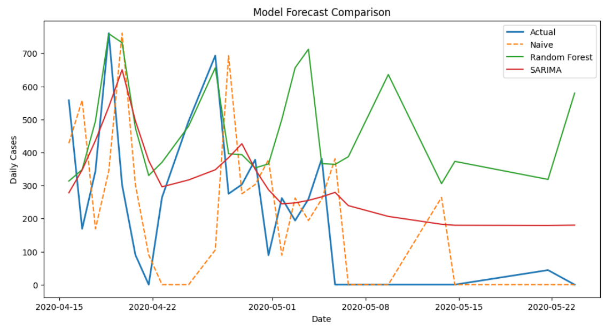
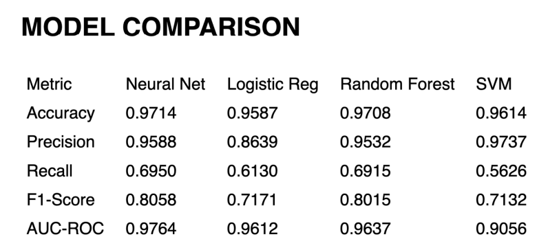
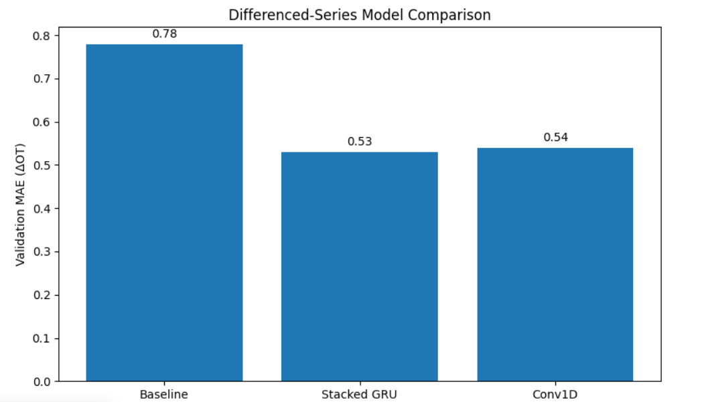

Business Intelligence
Sales Revenue & Profitability Analysis
Analyzed 9,994 retail transactions to identify revenue drivers,
profitability gaps, product-level losses, and discount patterns
using Python, SQL, Tableau, and Power BI.
9,994
transactions analyzed
~$2.3M
sales analyzed
Key finding:
Technology generated approximately $145K in profit,
while Tables produced about $17.7K in losses.
Transactions discounted above 30% also showed weaker
profitability patterns.
Tools:
Python · SQL · Power BI · Tableau · Pandas

Data Engineering
Production-Style API to PostgreSQL ETL Pipeline
Built a modular Python ETL pipeline that extracts paginated product
data from a REST API, validates and transforms nested JSON, and loads
clean records into PostgreSQL using idempotent upserts.
15
automated pytest cases
CI + Docker
repeatable workflow
Engineering highlight:
Timestamped raw JSON is preserved for traceability, while PostgreSQL
ON CONFLICT upserts allow repeat runs without creating
duplicate source product IDs.
Tools:
Python · Pandas · PostgreSQL · REST API · Docker · pytest · GitHub Actions

Customer Analytics & ETL
E-Commerce Customer Analytics
Combined six relational Olist datasets into an analysis-ready
workflow to investigate revenue, customer behavior, delivery
performance, reviews, and regional freight costs.
98,666
orders analyzed
~$15.84M
revenue analyzed
Key finding:
Longer delivery times were associated with lower customer review
scores, while repeat purchasing remained limited and some states
showed substantially higher freight-cost ratios.
Tools:
Python · Pandas · NumPy · ETL · EDA

Business Intelligence
Hospital Operations Analytics Dashboard
Built an interactive Power BI dashboard combining patient,
appointment, department, billing, and medical-record data to
monitor hospital activity and operational KPIs.
32.67%
cancellation rate
$10.93K
highest avg. treatment cost
Key finding:
Radiology recorded the highest appointment volume, while Oncology
had the highest average treatment cost among the departments shown.
Tools:
Power BI · DAX · Data Modeling · KPI Reporting

Time-Series Forecasting
COVID-19 Regional Forecasting — Italy
Compared statistical and machine-learning approaches for forecasting
regional COVID-19 case trends in Lombardia using time-aware
validation.
180.42
SARIMA MAE
205.84
naive baseline MAE
Key finding:
After correcting the validation approach, SARIMA delivered the
strongest out-of-sample performance, outperforming both the
Naive baseline and Random Forest benchmark.
Tools:
Python · Pandas · SARIMA · Scikit-Learn · Time Series

Machine Learning
Diabetes Risk Prediction
Built and compared four supervised-learning models on a public
diabetes prediction dataset using a complete preprocessing,
training, and evaluation workflow.
97.14%
neural network accuracy
0.9764
AUC-ROC
Key finding:
The Neural Network produced the strongest overall results, although
recall remained lower at 0.695, highlighting why accuracy alone was
not sufficient for evaluating the classifier.
Tools:
Python · Scikit-Learn · TensorFlow · Keras · Pandas

Deep Learning & Forecasting
Time-Series Forecasting of Energy Metrics
Benchmarked deep-learning approaches for forecasting electricity
transformer oil temperature using more than 17,000 hourly ETTh1
observations.
0.47
Stacked GRU test MAE
0.65
baseline test MAE
Key finding:
Addressing non-stationarity through differencing improved forecasting
performance, with the final Stacked GRU outperforming the baseline.
Tools:
Python · TensorFlow · Keras · GRU · Pandas · Time Series